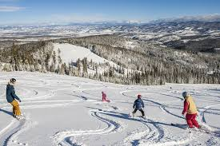
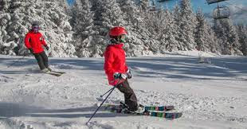
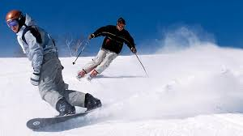

Winter Sports Shop
Welcome
Welcome to the Winter Sports. We love all sorts of skiing and want to share our collection of skis, snowboards, parts, clothing and accessories in one easy location. Take a look around and let us know if there is something you can't seem to find. Our staff is knowledgeable and we are all boot and binding fitting certified.
Alpine skiing
Alpine skiing has been around for centuries. The basic equipment has not changed: skis, boots and bindings. The technology of the equipment has dramatically changed since those first wooden skis, leather boots and bindings. Today's equipment can be so tailored to the individual and their expertize. A professional is needed to get the most out the equipment. Our team of associates can put you in the best set of equipment at a price within your budget. Alpine skis
Snowboarding
In the past few decades a new downhill experience has exploded: the snowboard. These downhillers find the thrill of carving and weaving the slopes on a single well engineered board as fun as the centuries old skis. With a well-crafted board, a snowboarder can experience the joy of the winter sport on the slopes. We have a vast selection of the most modern snowboards around.
We know it can be hard choosing the right board that’s why we recommend for you to come in and get a free fitting. We encourage you to take out a board and ride it. Only then will you know if the board is right for you. Snowboards
Boots and bindings

If your feet are not comfortable there is no way to enjoy the winter slopes. Whether you are alpine, cross-country or a boader, you need the best fitting boots possible. We have over 30 styles of footware to ensure you get the boot you need. Our associates will gladly take you through the process of fitting that boot. Whether you are new to the sport or that expert that needs to go to the next level, we carry the boot that you need or we can special order it. Boots and Bindings
Ski Rentals
Got friends coming to town and want to go for to the slopes? We offer both skis and boards for rent. Our rental program is the easiest and fasted way to get your visitor on a quality set of equipment with boots, bindings and skis/boards for a weekend trip to the mountains or that day trip to the local slope. We have a equipment that will suit your requirements. Each package includes skis/board/poles, boots and bindings. Give the store a call before you come down. We carry equipment for all ages. Rent for the day, by the week or just for the weekend (Friday, Saturday and Sunday). An adult (21 years or older) must sign and agree to the terms of the rental. You will need a major credit card.
| Style | Daily Rate | Weekly Rate | Weekend Rate |
|---|---|---|---|
| Alpine | $35 | $200 | $95 |
| Boards/Blades | $45 | $250 | $120 |
| Cross Country | $25 | $130 | $60 |
Prices are for standard equipment. High Performance equipment is available at premium rate.
Contact Us